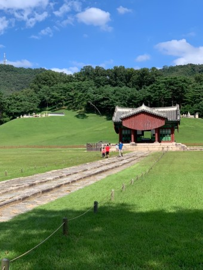

장소 상세보기
|  |
| 번호 | 1 |
|---|---|
| 분류 | 관광 |
| 장소 번호 |
A0001 |
| 장소명 | 서오릉(西五陵) |
| 장소 주요 설명 |
서오릉이란 조선왕조의 다섯 능 즉 경릉(敬陵,덕종과 소혜왕후의 능), 창릉(昌陵, 예종과 계비 안순왕후의 능), 익릉(翼陵, 숙종의 원비인 인경왕후의 능), 명릉(明陵, 숙종과 인현왕후, 인원왕후의 능), 홍릉(弘陵, 정성왕후의 능)이 이곳에 모여 있어서 일컫는 명칭이다. |
| 장소 상세 설명 |
고양시 덕양구 용두동에 위치하며 경릉, 창릉, 익릉, 명릉, 홍릉이 모여 있어 서오릉이라고 한다. 서북방향으로 서삼릉이 위치하는데 불과 2.5㎞정도 떨어져 있어 서팔릉이라고 불러도 좋을 듯 하지만 발음이 좋지 못하다. 구리시의 동구릉 다음으로 큰 조선왕조의 왕실 족분군이며 동남쪽으로 서울 은평구와 붙어 있다. |
| 주소 | 경기 고양시 덕양구 용두동 475-91 |